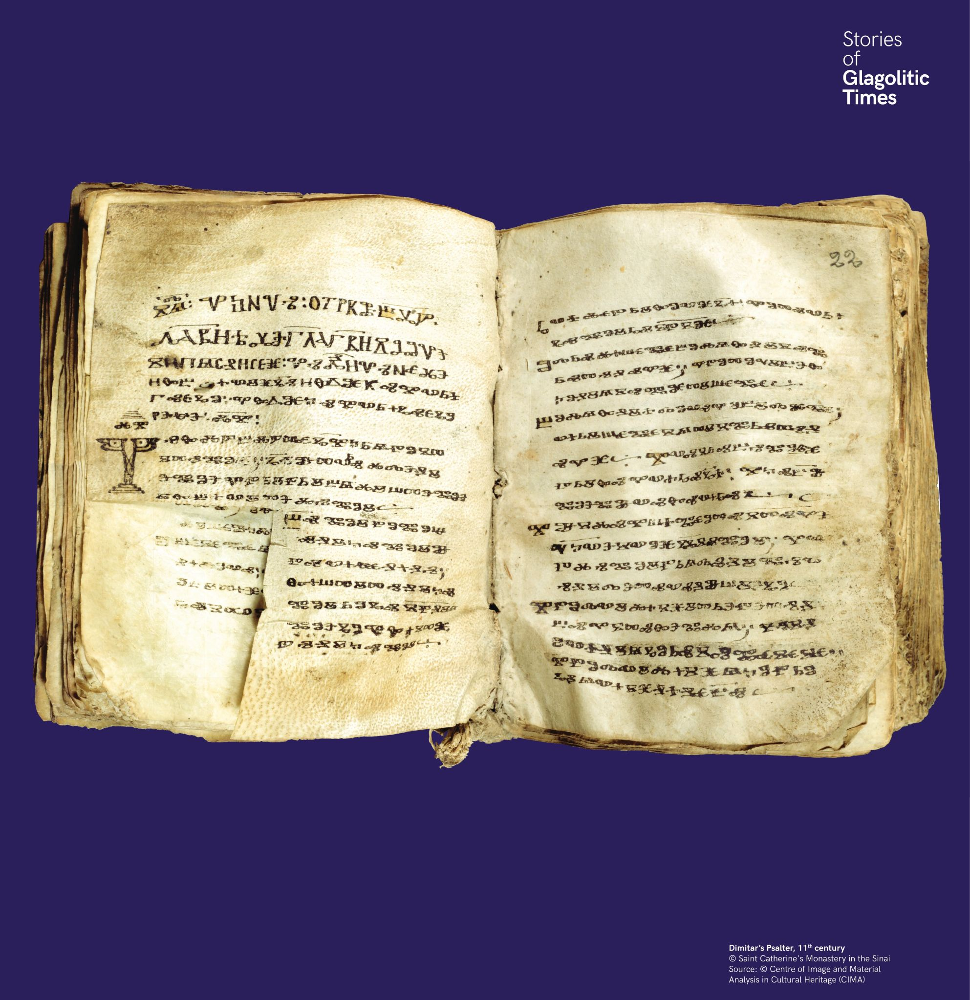

Két írás párhuzamos használata
A Dimitár-zsoltáron dolgozó három másoló összesen 632 cirill betűt használt a glagolita kézirat szövegében. Ez jól mutatja, hogy az írástudókat mindkét írás használatára képezték.


A Dimitár-zsoltáron dolgozó három másoló összesen 632 cirill betűt használt a glagolita kézirat szövegében. Ez jól mutatja, hogy az írástudókat mindkét írás használatára képezték.
Тримата писари на Димитровия псалтир са използвали общо 632 кирилски букви в глаголическия текст.